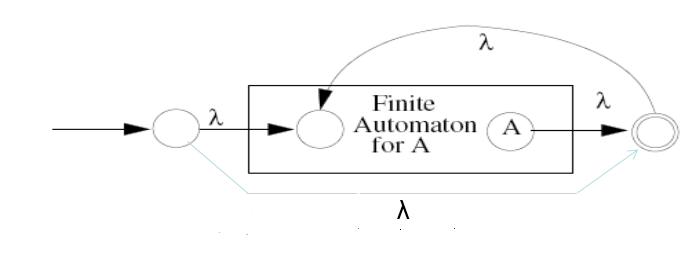

Compiler
What is Compiler
- compiler is a program that accepts programming language ,
then output assembly language which will be assembled into machine language
- OS dependent
- this process is compilation
Front-end & Back-end
- font-end 分析 source code 並轉成intermediate representation ( IR )
，platform-independent盡量與平台無關。
- back-end tranform IR to target code( assembly code )
，machine dependent
Pure machine code
- 與OS平台無關的機器語言
platform-independent
Augmented machine code
- 會受到不同平台影響的機器語言(system call , window APIs)
platform-dependent
Virtual machine code
- generate virtual machine instructions
- run with VM interpreter
( interpreter is OS dependent )
- benifit : portability
Bootstrapping
- 將A compiler 的code generation改成B assembly code
然後將A 的source code 餵給自己
Compiler vs. Interpreter
- compiler
全部翻譯完才執行
- interpreter
直譯器，翻譯一行，執行一行
Scanner
- scanner會分析輸入的字串charecter stream，並分類轉成token string
- also called lexical analyzer
Token
- terminal symbol (cannot be rewritten)
- struct token { type , value , name }
Regular expression
- 是被用來匹配字串中字元組合的規則
- 根據input的character stream 轉換成對應的terminal symbol(token)
- a set of string s defined by a regular expression is called a regular set
Rules
- ' | ' or , Alternation , meta-character
- ' AB ' , Catenation
- ' * ' many (>=0) , Kleene closure , meta-character
- ' + ' many (>=1) , meta-character
- ' ? ' optional (0 or 1)
- [ a-z A-Z ] (a ~ z , A ~ Z)
- '\d' (0 ~ 9)
- '^' (no character in front)
- '.' (any character)
- [ ^"a\n ] , not , (all character except " and a and \n)
Finite Automata
- FA can be uesd to recognize the tokens specified by a regular expression
- transducer
- FA consists of :
- A finite set of states
- A finite vocabulary
- A set of transitions from one state to another
- A special state called the start state
- A subset of the states called the accepting or final state
- Deterministic(確定性的) Finite Automata ( DFA )
- only one transition from a state that have the same label

- represented with transition table ( good )
- represented with explicit control ( noob )
- Nondeterministic(不確定性的) finite automaton ( NFA )
- multiple transitions from a state that have the same label

- have transitions labeled with λ
Regular expression is equivalent to FA
RE to NFA :
- A|B

- AB

- A*

NFA to DFA :
- subset construction algorithm


IMPORTANT NOTES
DFA/NFA are not capable of remembering the occurrences of symbols
- AnBn only can represented by CFM
Context-free grammer is more powerful than regular expression
- RE -> FA ( low level )
- CFM -> Pushdown Automata ( high level )
Parser
- parser 會分析語法是否符合定義
- 分析完成後會建成abstract syntax tree(AST)
- a set of productions( rewriting rules )
Context-free grammer
- 不會被前後文影響的改寫規則
- ex : Recursive descent (LL type parser)
Context-sensitive grammer
Two Grammer symbols
terminal(token) : cannot be rewritten
non-terminal : can be rewritten
Special symbol
Prog (start-symbol , non-terminal)
λ (empty or null string)
ts.peek (lookahead)
Abstract Syntax Tree
- 用來表示一個program經過語法分析的中間產物
- also create symbol table that record all ID and their type in AST
Type checker
- type checker會檢查(AST code)語意(semantics)是否有錯誤
- ex : 未宣告就用、浮點數丟給字串...s
Translator
- translate AST code to IR code
Optimizer
- improve IR code's performance
Code generator
- mapping IR code or AST into target code ( assembly code )